Tutoriales
Armá tus primeros juegos, paso a paso
Tres juegos de dificultad creciente y un quiz de preguntas, con la imagen de cada guion tal como se ve en ScrachMo. Podés abrir cada juego ya armado para ver cómo funciona y modificarlo, o construirlo vos siguiendo los pasos.
Antes de empezar
La pantalla
Arriba está el escenario con los botones Ejecutar (arranca todos los guiones que empiezan con «Al iniciar»), Detener y Modo juego (pantalla completa con flechas y botón de acción táctiles). Más abajo están Personajes, Tu código y la paleta Agregar bloques.
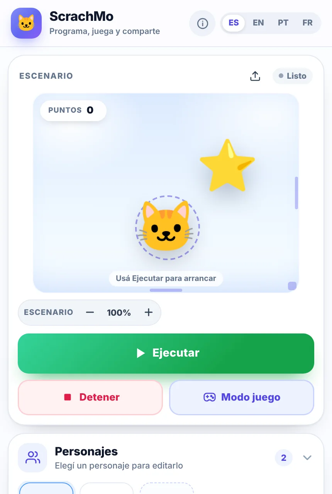
La pantalla de ScrachMo con el escenario, Ejecutar, Detener y Modo juego Personajes
Cada personaje tiene su propio código. Tocá Agregar y elegí un dibujo. Después podés cambiarle el nombre, la posición, la dirección, el tamaño y la rotación (Gira, Voltea o Fijo).
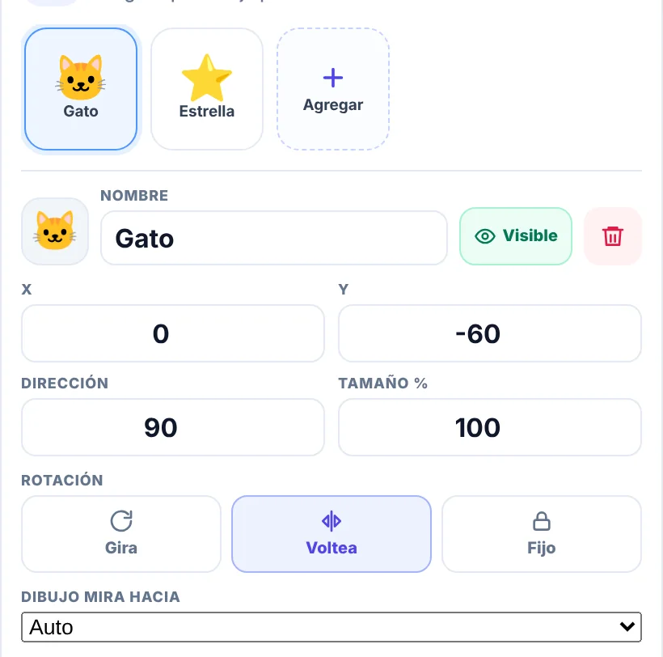
Tarjeta Personajes con nombre, dirección, tamaño y rotación 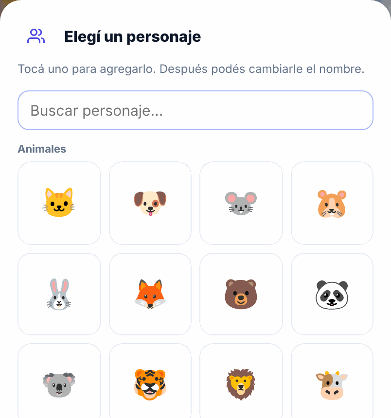
Ventana para elegir un personaje Bloques
En la paleta elegí una categoría (los colores son los mismos de todas las imágenes de esta guía). Tocá un bloque para agregarlo al final del código del personaje elegido, o arrastralo desde el ícono ⠿ para soltarlo donde quieras. Los bloques con un hueco por dentro (Por siempre, Repetir, Si…) guardan otros bloques adentro: arrastrá un bloque dentro del hueco.
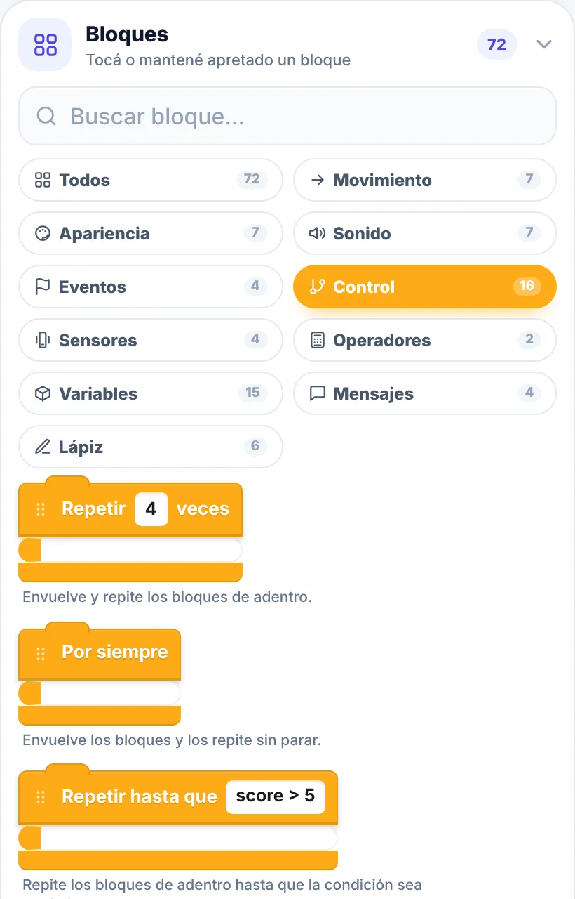
Paleta de bloques con las categorías Cada guion empieza con un «sombrero»
Un guion empieza con un bloque de inicio: Al iniciar, Al presionar…, Al llegar a…, Al recibir… o Al comenzar como clon. Todo lo que está debajo, hasta el próximo sombrero, es parte de ese guion y se ejecuta de arriba hacia abajo. Si pulsás Ejecutar y no pasa nada, falta un Al iniciar.
Casillas y la ƒ
Las casillas blancas se escriben a mano. La ƒ que tienen al lado permite poner un reportero: un valor que se calcula solo, como Posición x, Al azar o Dirección de [personaje].
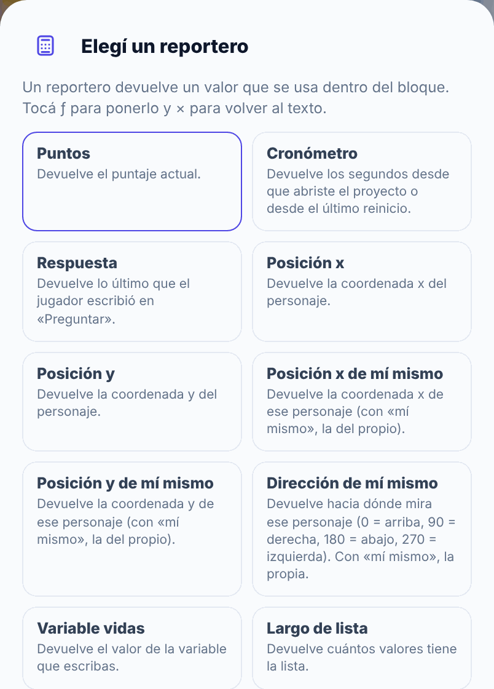
Lista de reporteros disponibles al tocar la ƒ Variables y puntos
Poner [vidas] a [3] crea la variable vidas sola y le da el valor 3; Aumentar [vidas] en [1] y Disminuir [vidas] en [1] le suman o restan. La casilla de nombre sugiere las variables que ya tenés. Las condiciones las leen:
Si vidas < 1 entonces. El marcador es una variable especial: Sumar 1 al marcador y Reiniciar puntos.Probar
Tocá Ejecutar. En la computadora se juega con el teclado; en el celular, con Modo juego, que muestra el mando táctil. Detener corta todo y borra los clones.
Operadores y reporteros: meter valores en cualquier casilla
Casi todas las casillas tienen una ƒ. Tocala y elegí un reportero: un valor que se calcula solo. Podés meter uno dentro de otro (una cuenta dentro de una cuenta) y usarlos en Poner, Aumentar, Disminuir, Decir, Preguntar, Si…, Repetir, Esperar, las listas y casi todos los bloques con casillas. La ✕ de un reportero lo saca y devuelve la casilla.
Cuatro ejemplos
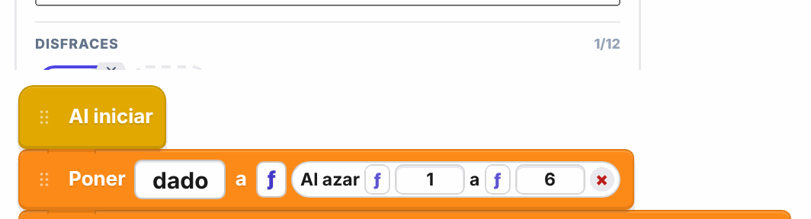
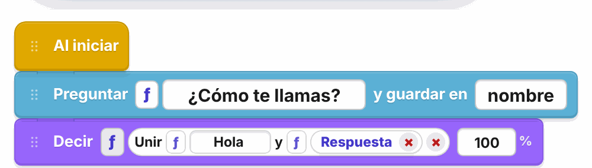
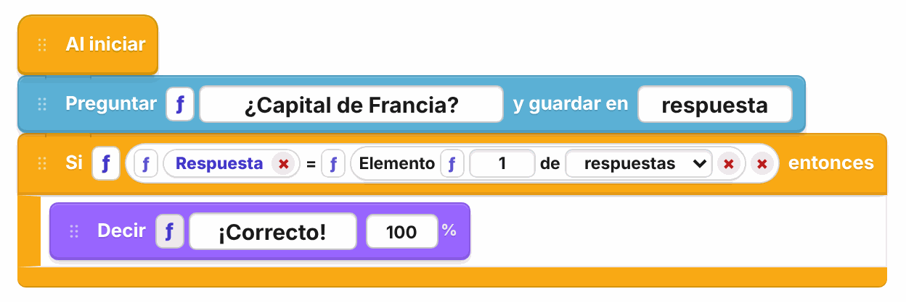
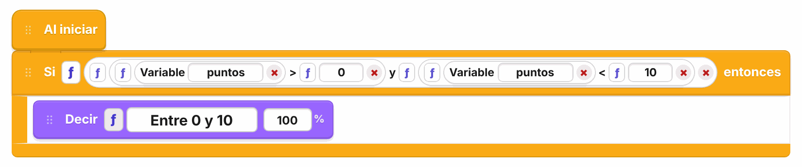
Operadores disponibles
- + − × ÷
- Al azar … a …
- Resto de ÷
- Redondear
- Valor absoluto
- < = >
- y · o · no
- Unir
- Letras en …
- Letra n de …
- Respuesta
- Variable …
- Elemento n de lista
- Largo de lista
💡 Dentro de los operadores (Unir, =, +…) lo que escribís a mano es un valor literal. Para usar el valor de una variable ahí adentro, ponele el reportero Variable.
Nivel 1 · Simple
⭐ Atrapa las estrellas
Un gato que se mueve con las flechas y junta 5 estrellas. Es el juego más corto: 2 personajes, 14 bloques distintos y un guion por cada cosa que pasa.
- Mover con el teclado
- Bucle «Por siempre»
- Condicional «Si toca a»
- Puntaje
- Ganar
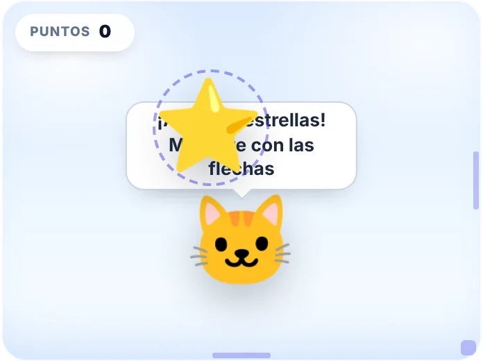
Bloques que vas a necesitar
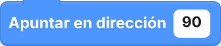
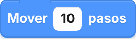
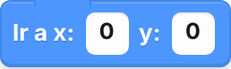
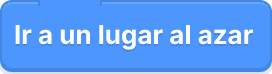
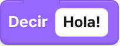
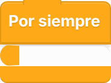
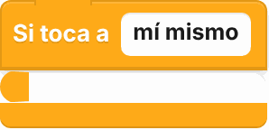
Paso a paso
Armá los personajes
El proyecto ya trae al Gato 🐱. Tocá Agregar y elegí la estrella ⭐ y llamala Estrella. Elegí al Gato y, en Rotación, tocá Voltea: así se da vuelta de izquierda a derecha sin quedar cabeza abajo.
Gato: empezar y dar las instrucciones
El guion Al iniciar lo lleva abajo, pone los puntos en 0 y le dice al jugador qué hacer. Esas instrucciones claras son parte del juego.
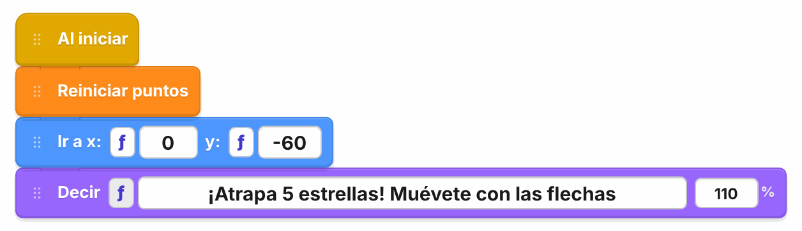
Gato · Al iniciar Gato: moverse con las flechas
Un guion por tecla. Cada uno apunta hacia donde va (−90 izquierda, 90 derecha, 0 arriba, 180 abajo) y mueve 20 pasos. Armá uno y repetí lo mismo para las otras tres teclas, cambiando la tecla y la dirección.
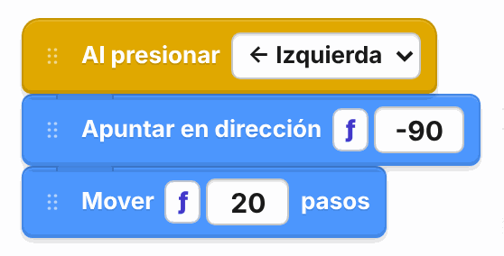
Flecha izquierda Flecha derecha 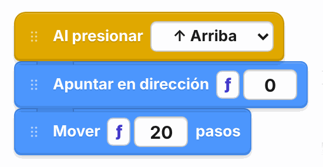
Flecha arriba Flecha abajo Estrella: aparecer y esperar el choque
Primero salta a un lugar al azar. Después, Por siempre pregunta cada 0,2 segundos «¿me tocó el gato?» (Si toca a → elegí Gato en el desplegable). Si sí: suma 1 punto y salta a otro lugar.
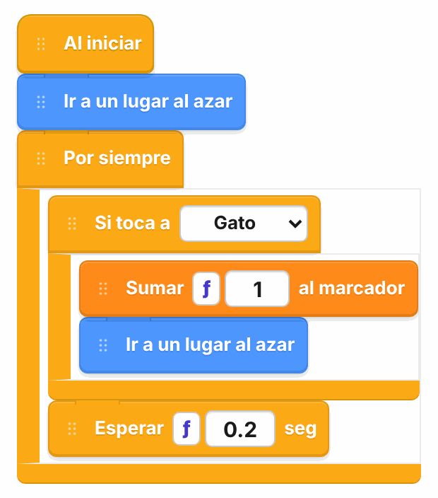
Estrella · Al iniciar 💡 La pausa de «Esperar 0.2» evita que el programa revise el choque sin descanso.
Ganar
Al llegar a 5 puntos, el gato dice «¡Ganaste!» y la estrella se esconde (un personaje escondido ya no suma). Ese es el objetivo y el resultado del juego.
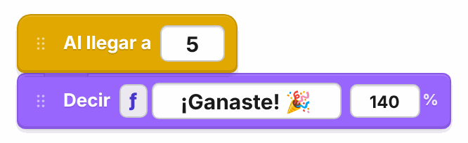
Gato · Al llegar a 5 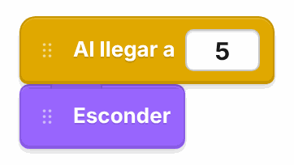
Estrella · Al llegar a 5 Probalo
Tocá Ejecutar y mové al gato con las flechas. Cuando junte 5 estrellas, aparece el mensaje.
Ideas para mejorar
- Cambiá el 5 por otro número en los dos «Al llegar a…».
- Agregá otra estrella o un personaje que reste puntos (Restar a…).
- Sumale una pantalla de inicio con Decir y Esperar, como en el Nivel 2.
Nivel 2 · Intermedio
☄️ Esquiva meteoritos
Un ovni esquiva meteoritos que caen. Tiene 3 vidas, una pantalla de inicio, instrucciones, y se gana al llegar a 10 puntos o se pierde al quedarse sin vidas.
- Variables (vidas)
- Clones
- Mensajes
- Condiciones anidadas
- Ganar y perder
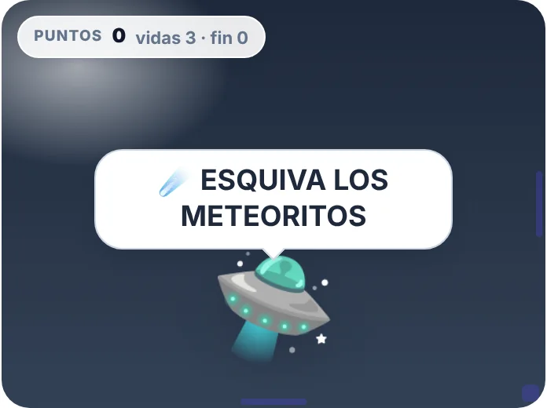
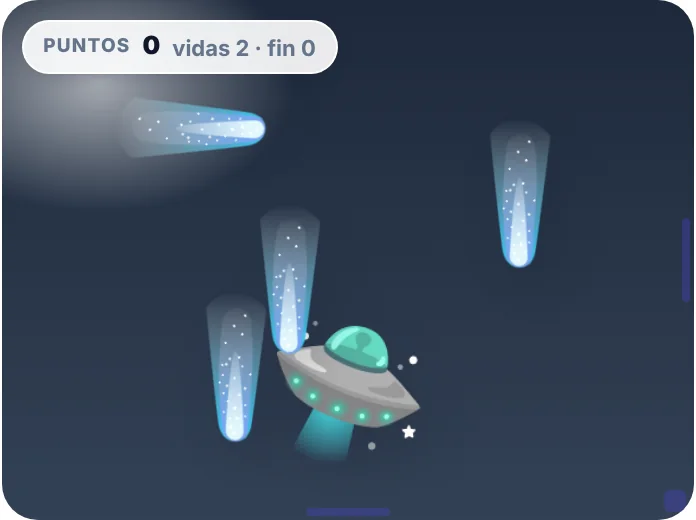
Bloques nuevos en este nivel
Además de los del Nivel 1 (Al iniciar, Al presionar, Mover, Decir, Por siempre, Esperar, Si toca a, Sumar al marcador…):
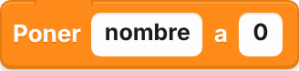
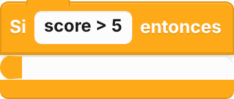
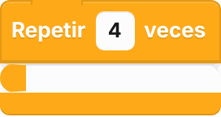
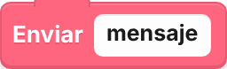
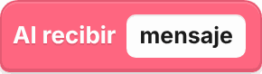
Paso a paso
Personajes y escenario
Agregá un ovni 🛸 (Rotación: Fijo, así no gira al cambiar de dirección) y un meteorito ☄️ (tamaño 80). Para un escenario de espacio, el bloque Cambiar fondo (Apariencia) pasa al siguiente color cada vez que se ejecuta; el último de la lista es el oscuro, y el ejemplo ya viene con él. También podés subir tu propia imagen con el botón ⬆ de la esquina del escenario.
Ovni: inicio, variables e instrucciones
Al iniciar: va a su lugar, pone los puntos en 0 y crea dos variables: vidas (3) y fin (0 = jugando, 1 = terminó). Muestra el título, espera, muestra las instrucciones y avisa «empezar» con Enviar. Al elegir el mensaje, tocá Nuevo mensaje… y escribí
empezar.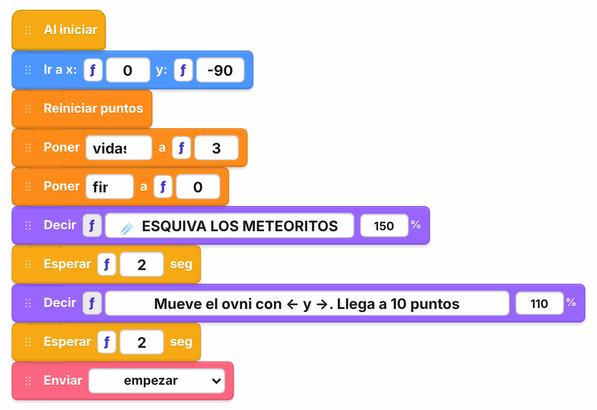
Ovni · Al iniciar Ovni: moverse
Dos guiones, uno por flecha, como en el Nivel 1 (sólo izquierda y derecha).
Flecha izquierda Flecha derecha Ovni: vidas y perder
Cuando llega el mensaje empezar, un Por siempre vigila. Si toca un meteorito: resta una vida y borra ese clon (si no, lo seguiría tocando y restaría varias veces). Si las vidas bajan de 1 y el juego sigue (
fin = 0), pone fin en 1 (Poner fin a 1) y dice «¡Perdiste!». El segundo Si evita repetir el mensaje.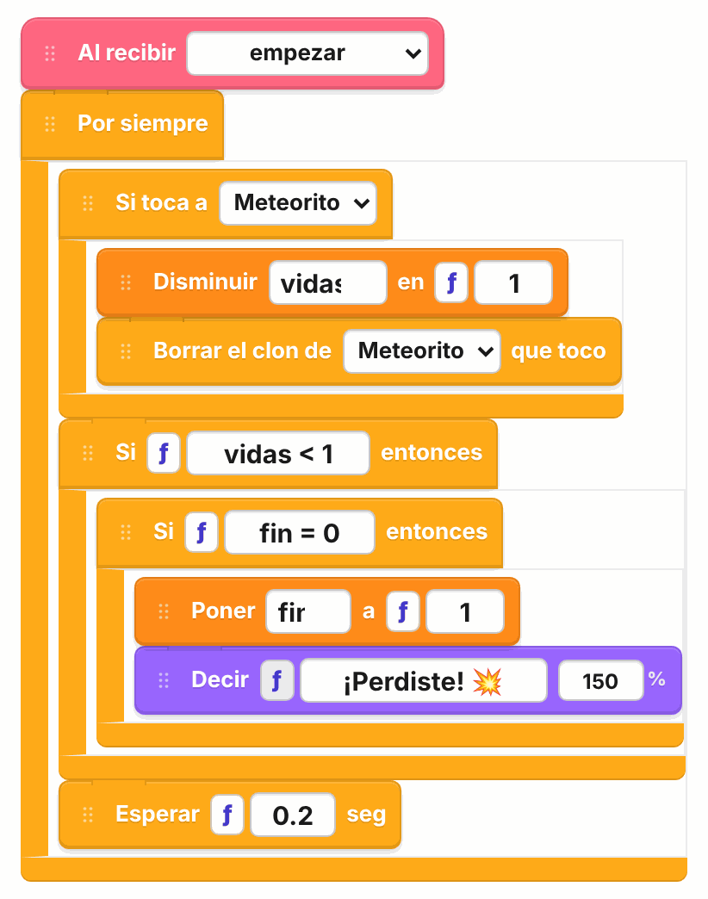
Ovni · Al recibir «empezar» Ovni: ganar
Al llegar a 10 puntos, si el juego no terminó, dice «¡Ganaste!».
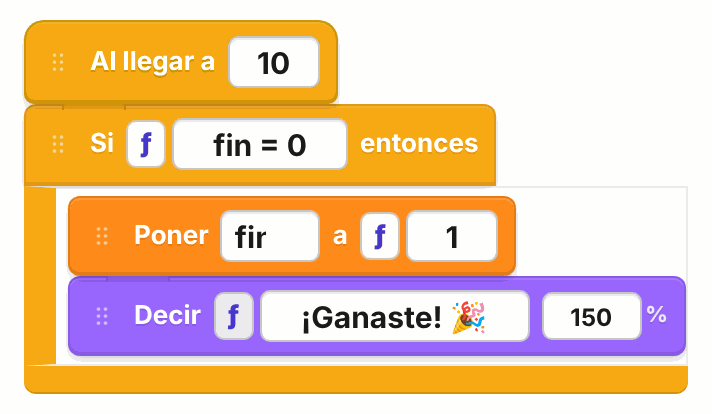
Ovni · Al llegar a 10 Meteorito: la lluvia
El meteorito original se esconde. Al llegar «empezar», repite 30 veces: si el juego no terminó, crea un clon de sí mismo y espera 1 segundo.

Meteorito · Al iniciar 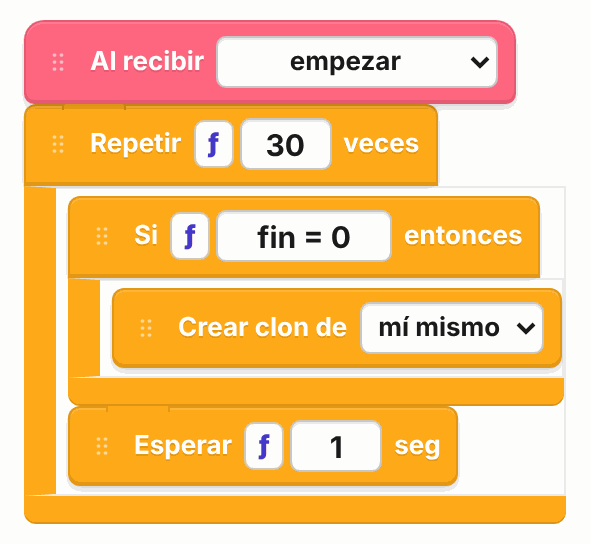
Meteorito · Al recibir «empezar» Meteorito: lo que hace cada clon
Cada clon se muestra, aparece arriba en un lugar al azar (tocá la ƒ de la casilla x y elegí Al azar, de −150 a 150), apunta hacia abajo (180) y repite 17 veces «Mover 10». Si llega abajo sin que lo toquen, suma 1 punto (esquivaste uno) y se borra.
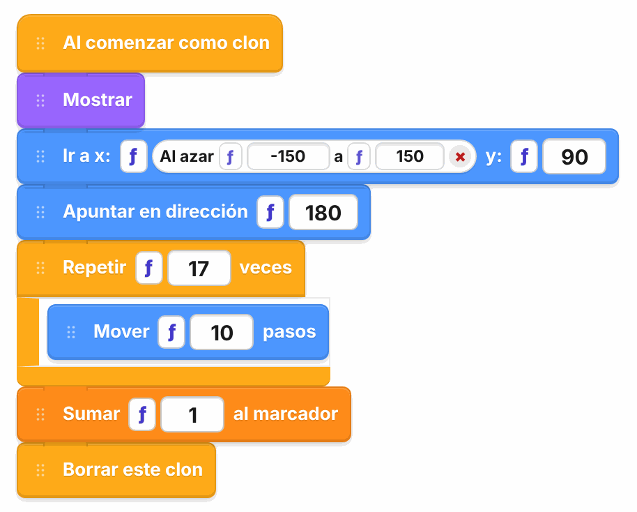
Meteorito · Al comenzar como clon Probalo
Esquivá 10 meteoritos para ganar. Si te tocan 3, perdés.
Ideas para mejorar
- Subí la dificultad bajando el «Esperar 1» a 0,6.
- Agregá un segundo tipo de meteorito más rápido (más pasos en «Mover»).
- Mostrá más mensajes: «¡Cuidado!» cuando quede una sola vida.
Nivel 3 · Avanzado
🚀 Defensa espacial
Una nave fija abajo que gira con ← y → y dispara con ESPACIO en la dirección que mira. Los invasores caen y hay que destruirlos antes de perder 3 vidas. Reúne todo lo anterior y suma leer la dirección de otro personaje.
- Girar y disparar
- Dirección de otro personaje
- Ir a un personaje
- Clones
- Mensajes
- Vidas y puntaje
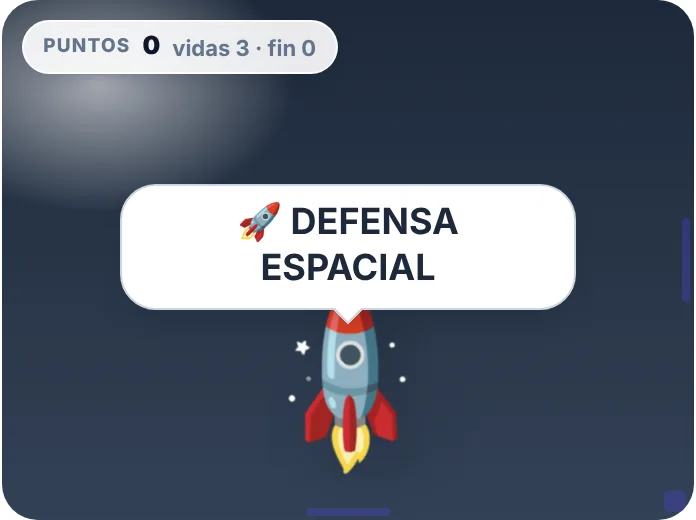
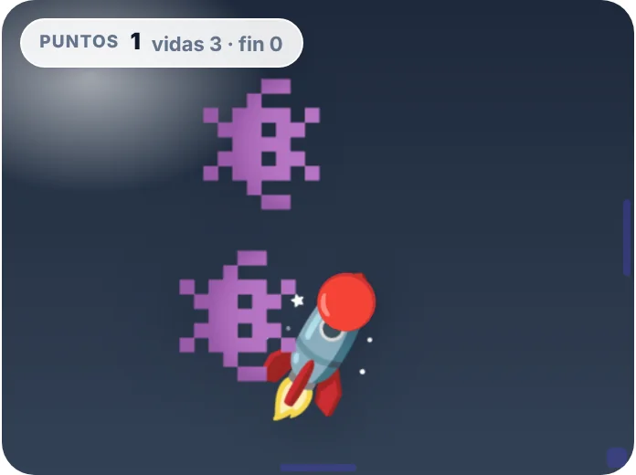
Bloques y reporteros nuevos
Se suman Girar e Ir a [personaje], y dos reporteros que se eligen con la ƒ: Dirección de [personaje] y, si querés usarlos en otros juegos, Posición x de [personaje] y Posición y de [personaje].
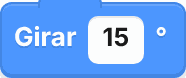
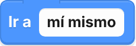
Paso a paso
Personajes
Agregá la nave 🚀 (abajo, y = −85, dirección 0: mira hacia arriba), la bala 🔴 (tamaño 45) y el invasor 👾. Si algún dibujo queda torcido respecto de su dirección, probá el desplegable Dibujo mira hacia de la tarjeta del personaje.
Nave: título, instrucciones y arranque
Igual que el Nivel 2: pone vidas y fin, muestra el título y las instrucciones y avisa
empezar.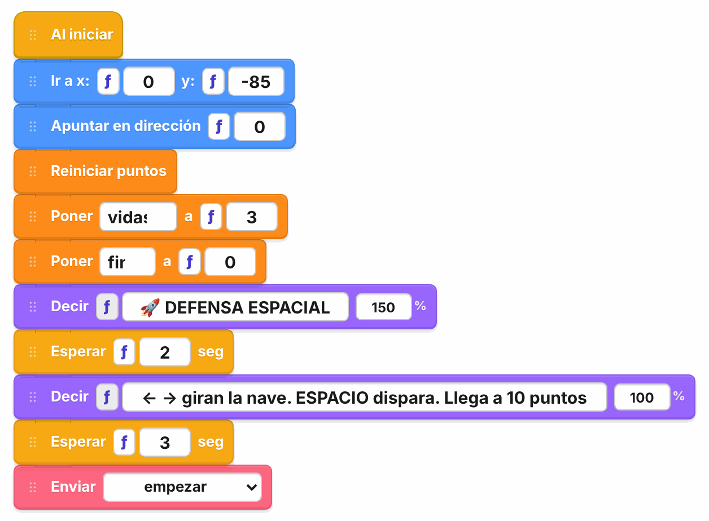
Nave · Al iniciar Nave: girar y disparar
Con las flechas gira 15° a cada lado. Con ESPACIO, si el juego sigue, envía el mensaje «disparo». Para elegir la tecla espacio, en Al presionar elegí «Espacio».
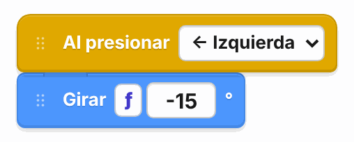
Flecha izquierda 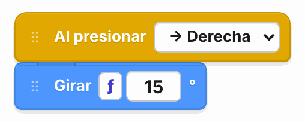
Flecha derecha 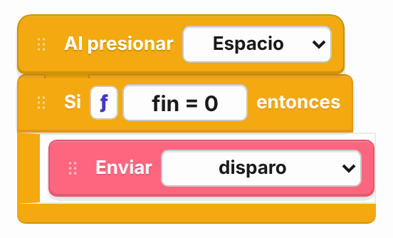
Espacio Bala: salir por la punta, sin importar la dirección
Acá está la clave. Al recibir «disparo» la bala: (1) va a donde está la nave (Ir a → Nave), (2) apunta en la misma dirección que la nave (en Apuntar en dirección tocá la ƒ y elegí Dirección de → Nave), (3) avanza 30 pasos para salir por la punta y (4) crea un clon. Como la dirección se lee en ese momento, funciona con la nave mirando para cualquier lado.
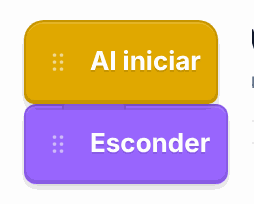
Bala · Al iniciar 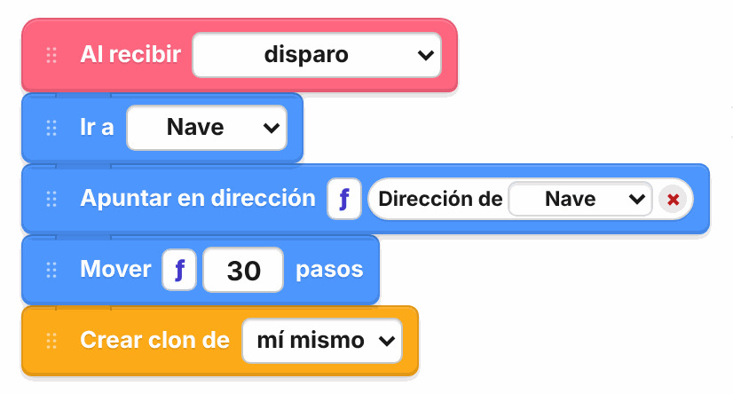
Bala · Al recibir «disparo» Bala: el clon que vuela
Cada clon se muestra y repite 20 veces: avanza 12 pasos y, si toca a un Invasor, suma 1 punto, borra al invasor que tocó y se borra a sí mismo. Si no toca nada, se borra al terminar el vuelo.
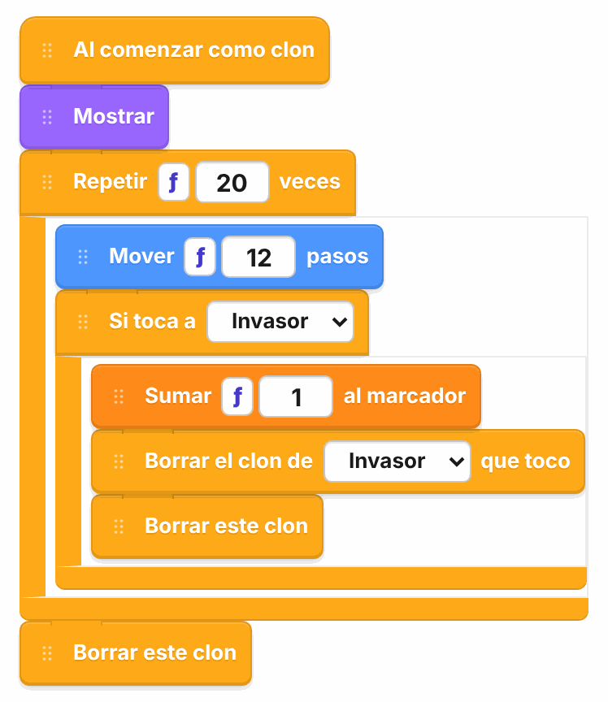
Bala · Al comenzar como clon Invasor: la lluvia de enemigos
Es el mismo patrón del meteorito del Nivel 2, con una diferencia: si el clon llega abajo sin que lo destruyan, resta una vida (Disminuir vidas en 1).

Invasor · Al iniciar 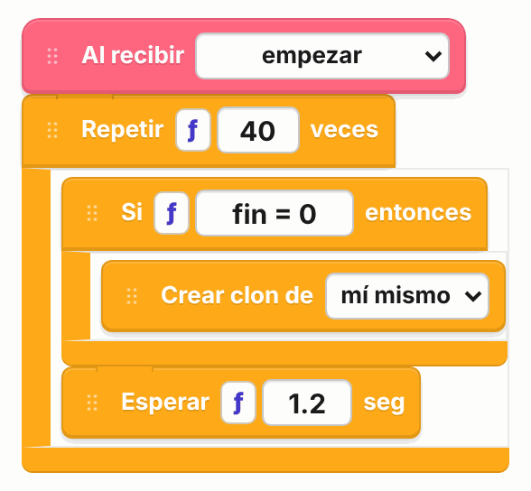
Invasor · Al recibir «empezar» 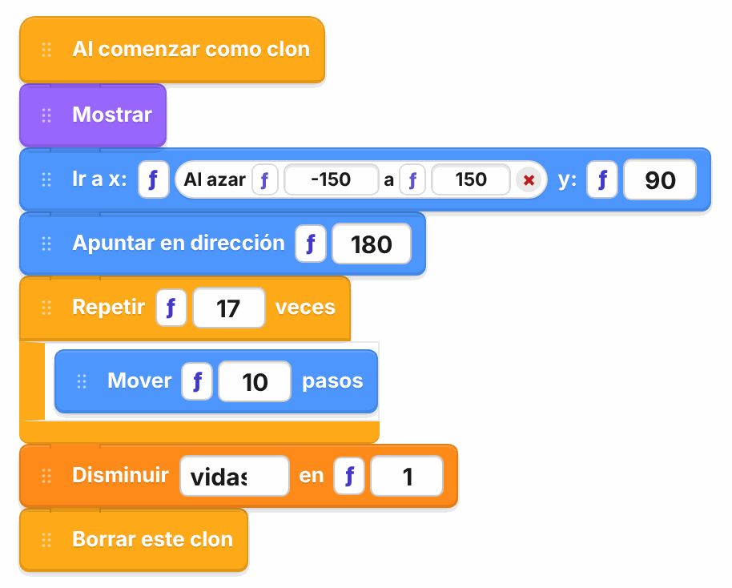
Invasor · Al comenzar como clon Nave: perder y ganar
Con empezar, la nave vigila las vidas: si bajan de 1, pierde. Al llegar a 10 puntos, gana. En los dos casos pone fin en 1 para que dejen de salir invasores y de aceptarse disparos.
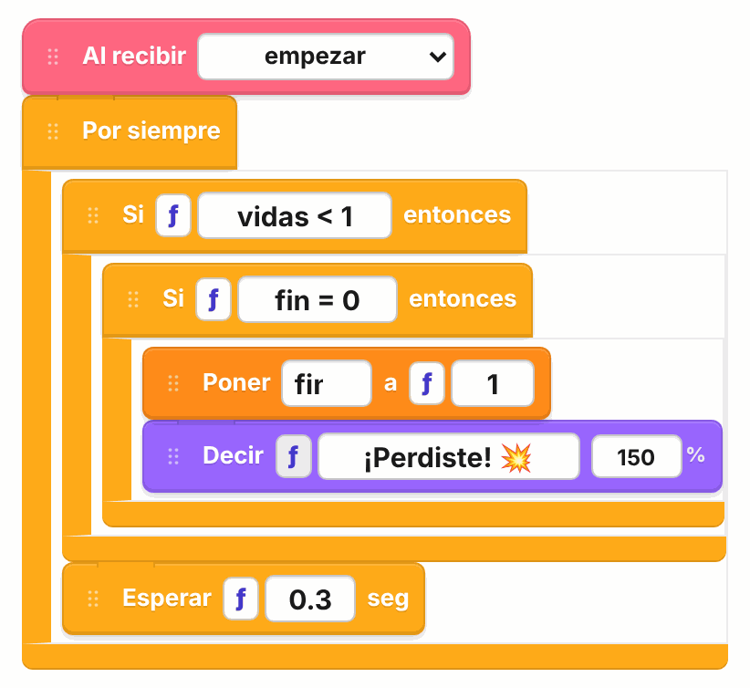
Nave · Al recibir «empezar» 
Nave · Al llegar a 10 Probalo
Girá con ← y →, disparale a los invasores con ESPACIO y llegá a 10 puntos. En el celular usá Modo juego.
Ideas para mejorar
- Que la nave también se mueva a los costados (mirá «Posición x» con la ƒ).
- Un invasor jefe que necesite más de un disparo (una variable
golpes). - Un segundo nivel: al llegar a 10, cambiar el fondo y apurar los invasores.
Bonus · Preguntas y respuestas
🦉 Quiz de preguntas
Un búho hace tres preguntas, revisa lo que escribís y cuenta los puntos. Usa Preguntar, listas de preguntas y respuestas, el operador = y el bloque Avanzar para pasar a la próxima pregunta.
- Preguntar y esperar
- Listas
- Comparar respuestas
- Próxima pregunta
- Anterior
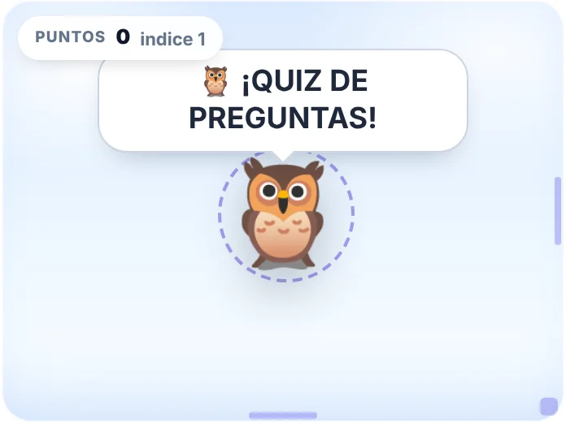
Bloques nuevos
Paso a paso
Personaje
Agregá un búho 🦉 (es el que pregunta). Todo el juego va en un solo personaje.
Empezar de cero
Al iniciar, puntos en 0 y vaciar las dos listas, así las preguntas no se repiten cuando volvés a ejecutar.
Al iniciar Cargar preguntas y respuestas
Una lista guarda muchos valores en orden. Cargá las preguntas en preguntas y las respuestas en el mismo orden en respuestas (la respuesta 2 es la de la pregunta 2). La variable indice dice por cuál pregunta vamos: empieza en 1. También podés cargar las listas a mano en la tarjeta Listas.
Seis «Añadir» y la variable indice Título
Un título y una pausa antes de empezar.
Título Cada ronda
Repetir tantas veces como preguntas haya (Largo de preguntas, con la ƒ). En cada vuelta: (1) Preguntar el Elemento [indice] de preguntas; la respuesta queda en la variable respuesta y en el reportero Respuesta. (2) Si Respuesta = Elemento [indice] de respuestas, dice «¡Correcto!» y suma un punto; sino dice cuál era. (3) Espera y Avanzar indice en la lista preguntas: pasa a la próxima y, después de la última, vuelve a la primera.
La ronda completa Final
Al terminar, dice los puntos con Unir: un texto más el reportero Puntos.
Final Anterior y próxima, a tu gusto
Avanzar y Retroceder mueven la variable por la lista y dan la vuelta al llegar al borde. Por ejemplo: Al presionar ← → Retroceder indice en la lista preguntas y decir el Elemento [indice] de preguntas; Al presionar → hace lo mismo con Avanzar. Así armás tarjetas de estudio.
Ideas para mejorar
- Agregá más preguntas: sólo hay que sumar una línea en cada lista (¡mismo orden!).
- Que cada pregunta valga más con un reportero (por ejemplo, el Resto de el índice).
- Usá Repetir hasta que para seguir preguntando hasta llegar a 3 puntos.
Los 11 indicadores de un juego completo
Si tenés que presentar un juego con una lista de requisitos (por ejemplo la de un trabajo escolar), estos dos juegos ya los cumplen. Usalos como modelo y cambiá la temática, los personajes y las reglas por los tuyos.
| # | Indicador | Nivel 3 · Defensa espacial | Nivel 2 · Esquiva meteoritos |
|---|---|---|---|
| 1 | Dos o más personajes u objetos | Nave, Bala e Invasor (3) | Ovni y Meteorito (2) |
| 2 | Escenario relacionado con la temática | Fondo oscuro de espacio (Cambiar fondo o tu imagen) | Fondo oscuro de espacio |
| 3 | Título o pantalla de inicio | Decir «DEFENSA ESPACIAL» al iniciar | Decir «ESQUIVA LOS METEORITOS» |
| 4 | Instrucciones claras | Decir con las teclas y el objetivo | Decir con las teclas y el objetivo |
| 5 | Secuencias de instrucciones | Todos los guiones: bloques de arriba hacia abajo | Todos los guiones |
| 6 | Al menos un condicional | Si toca a, Si vidas < 1, Si fin = 0 | Si toca a, Si vidas < 1, Si fin = 0 |
| 7 | Al menos un bucle | Por siempre y Repetir | Por siempre y Repetir |
| 8 | Al menos una variable | vidas, fin y el marcador de puntos | vidas, fin y el marcador de puntos |
| 9 | Interacción del jugador | Teclas ← → y ESPACIO (o Modo juego en el celular) | Teclas ← y → |
| 10 | Objetivo o desafío | Destruir invasores hasta llegar a 10 puntos | Esquivar hasta llegar a 10 puntos |
| 11 | Condición de resultado | «¡Ganaste!» al llegar a 10 · «¡Perdiste!» sin vidas | «¡Ganaste!» al llegar a 10 · «¡Perdiste!» sin vidas |
💡 El Nivel 1 no tiene título ni escenario propio: agregá esos dos pasos para completarlo.